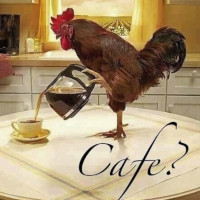

Estudante da Engenharia de Computação na UNIVASF, Brasil, campus Juazeiro. Participa de um
projeto no HU UNIVASF onde desenvolve um Painel de Gestão a Vista usando Django Back-end desde
maio de 2022, tendo feito um breve pronunciamento sobre esse processo durante o evento Lócus de
Inovação, em Agosto de 2022. Com excelente conhecimento de Inglês e boa capacidade comunicativa,
é um entusiasta de matemática e ciências em geral, tendo ensinado Geometria Analítica, como
na UNIVASF, e Física, como professor de um projeto voluntário, durante a pandemia de COVID-19.
Tome um café, escuta uma musiquinha

Contato